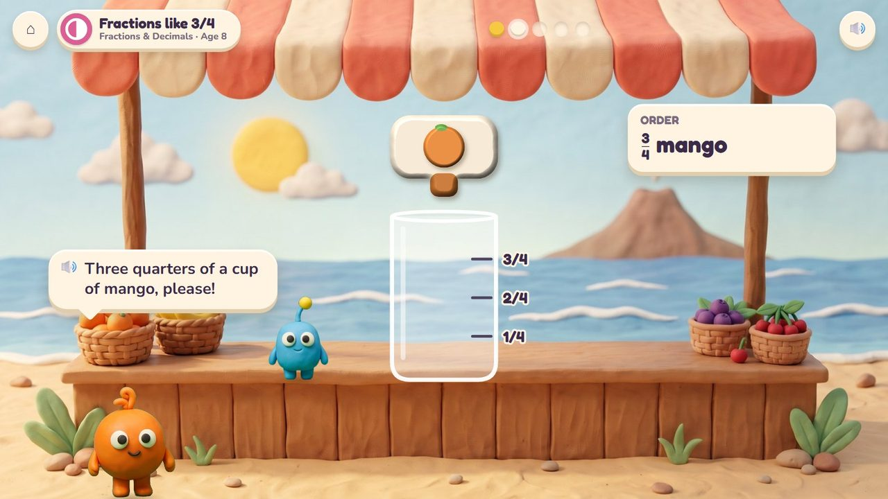
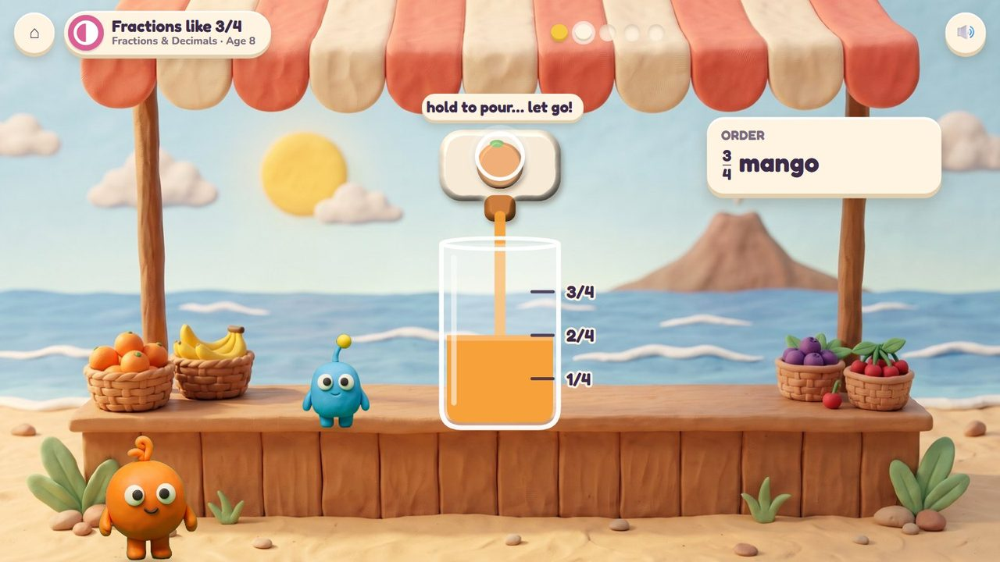
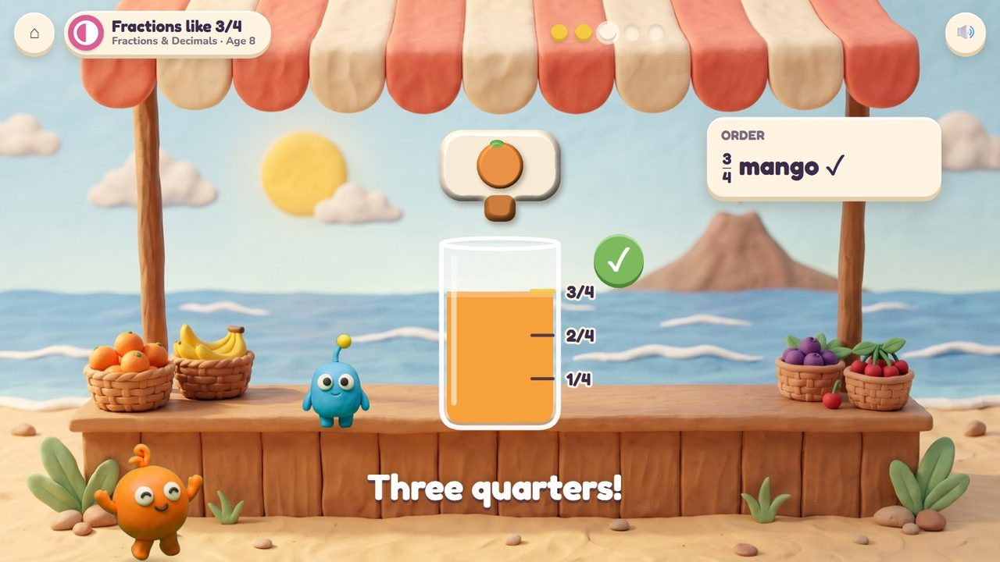
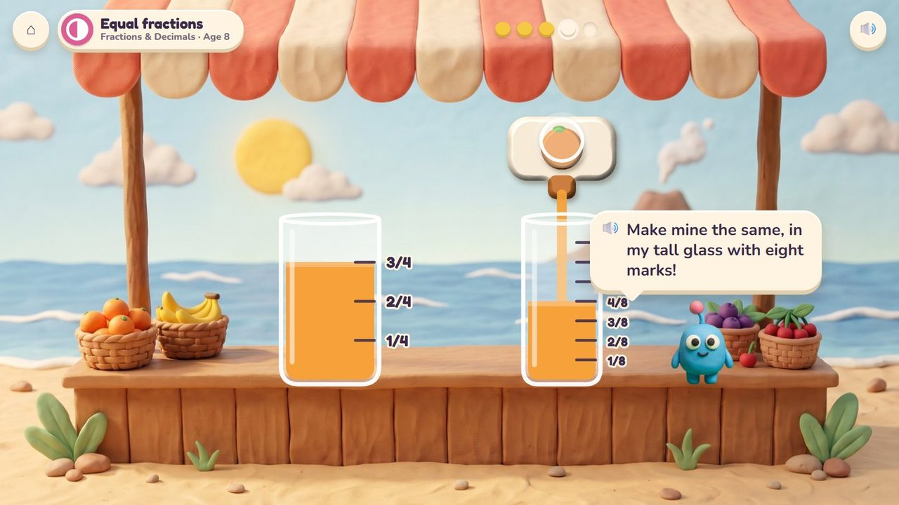
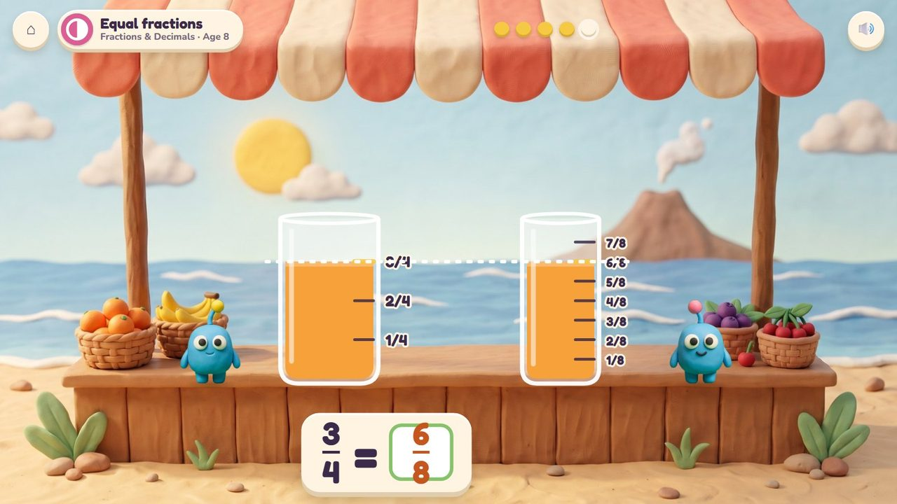
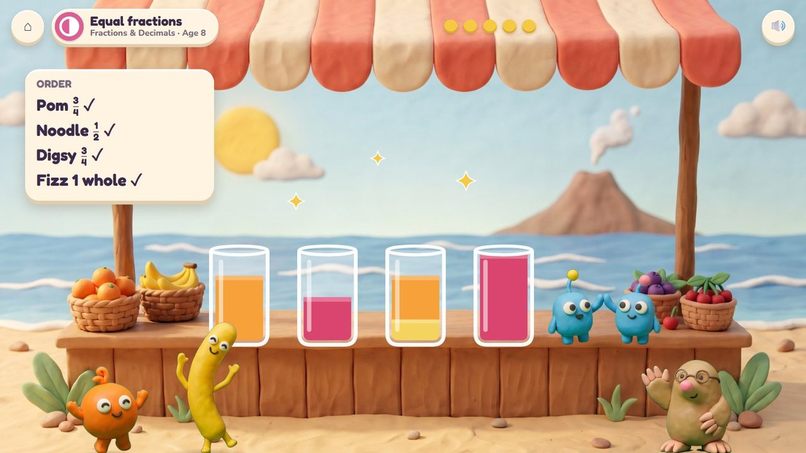
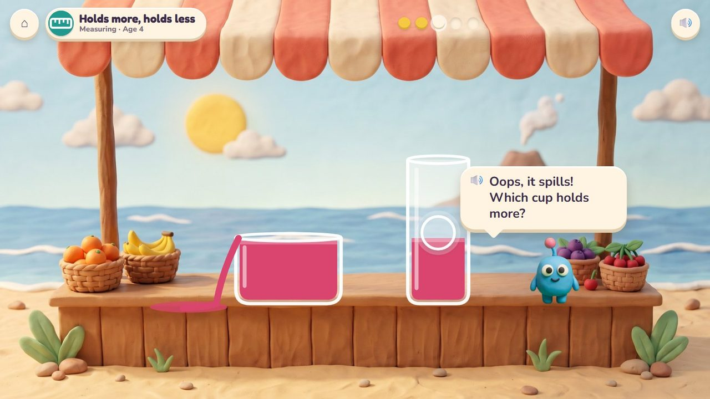
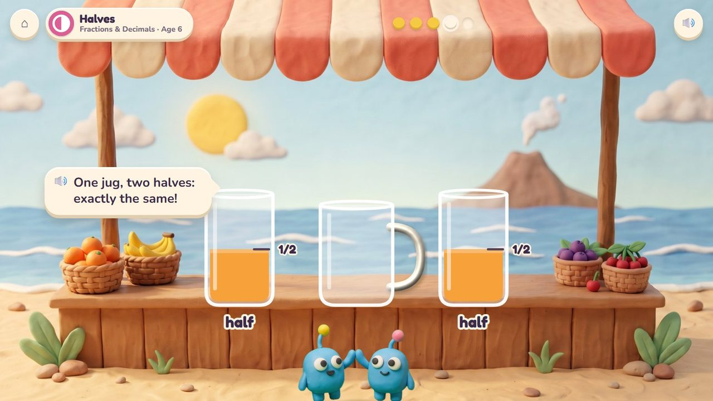
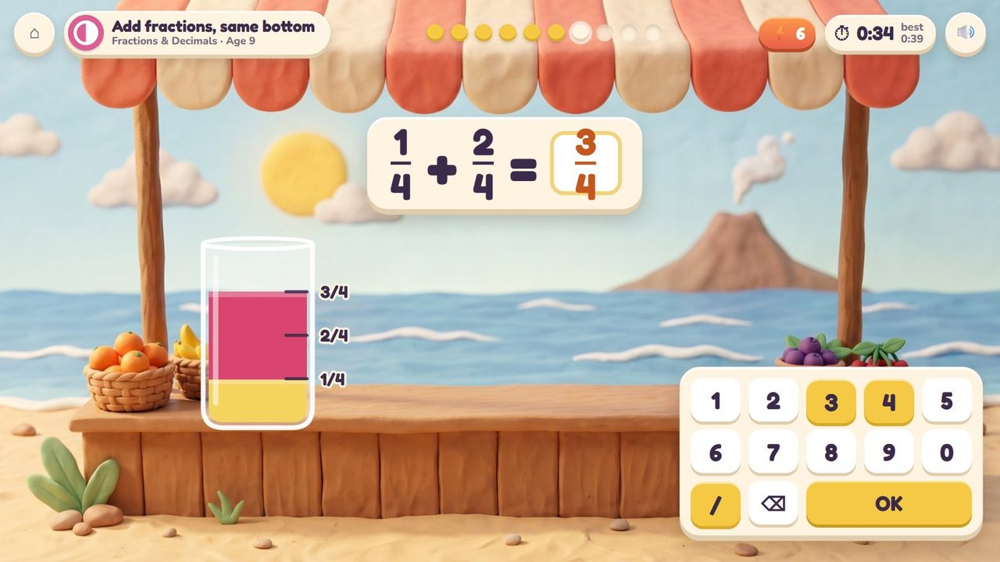
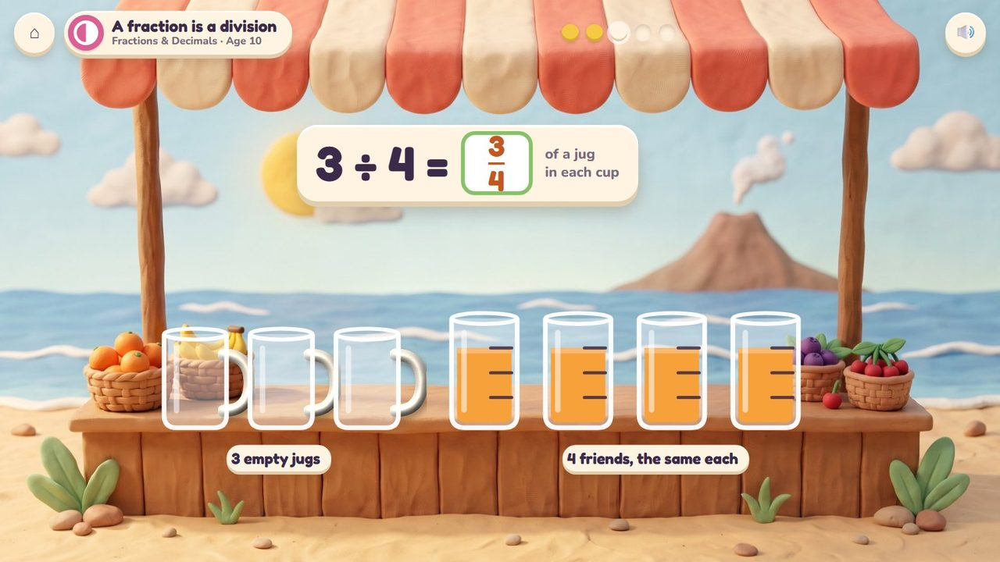

Hold the tap to pour, let go at the right mark.
48 lessons (31 taught here first, the rest practised here) in 4 topics:
Times & SharingFractions & DecimalsMeasuringPatterns & Graphs

Bim and Bam run a smoothie stand on the beach, and twins must always get exactly the same. Friends order drinks ("three quarters of a cup of mango"); the child holds the tap and lets go at the right mark. Jars are marked in halves, quarters, eighths, tenths or millilitres; pouring from one jar into another shows equal fractions; two flavours in layers add fractions; sharing jugs among cups shows that a fraction is a division.
Hold the tap to pour and let go; pour one jar into another; slide the cups.
Every friend sips their drink; the order board shows every order filled.
A storyboard of the game in one lesson, drawn from the app's own clay pictures.
Pom wants three quarters of a cup of mango; the cup has four marks.
🔊 “Three quarters of a cup of mango, please!”

Holding the tap, the juice rises past 1/4 and 2/4…

Let go at the third mark: three quarters.

Bam wants the same in a tall glass with eight marks.
🔊 “Make mine the same, in my tall glass with eight marks!”

Side by side, the juice stands at the same height.

The friends sip; the order board is all ticked.
A jar is shown: type how full it is (3/4) or the two layers together (1/4 + 2/4), with the fraction bar on the pad. Ten questions at 6-7, a 60-second round from 8; your time and your best on screen; only right answers count; a miss shows the answer and comes back later. No clock under 6.
The badge at the top left says the topic, the lesson and the age.

Pour the tall cup into the wide one: it spills! The tall one holds more.

One jug, two cups, exactly the same: two halves.

The quick round: a layer of 1/4 and a layer of 2/4 make 3/4. Timed.

Three jugs shared by four friends: each cup gets 3/4 of a jug.
| Age 3Pre-school | Full and empty. |
| Age 4Pre-K | Holds more, holds less: pour one cup into another… it spills! |
| Age 5Kindergarten | Compare what it holds. |
| Age 6Grade 1 | Halves and quarters; more parts make smaller parts. |
| Age 7Grade 2 | A whole is 2 halves, 3 thirds or 4 quarters. |
| Age 8Grade 3 | Unit fractions, 3/4, equal fractions (3/4 poured into eighths is 6/8), litres, compare fractions. |
| Age 9Grade 4 | Add and take away fractions; mixed numbers; tenths and hundredths. |
| Age 10Grade 5 | Different bottoms; a fraction is a division (3 jugs for 4 cups); sharing fractions; millilitres and litres. |
none, halves, quarters, thirds, eighths, tenths, millilitres
one fraction, the same in another jar, two layers, a share of jugs
the marks glow; after a miss the jar is counted mark by mark
pouring; the number pad with a fraction bar
Age by age they are on the full list; here grouped by topic (the first activity named teaches a lesson, the others practise it).
3.OA.2Poke Pals · Smoothie Stand3.OA.3Poke Pals · Smoothie Stand4.OA.3Poke Pals · Smoothie Stand4.NBT.6Poke Pals · Smoothie Stand1.G.3Pull-a-Shape · Smoothie Stand1.G.3Pull-a-Shape · Smoothie Stand1.G.3Pull-a-Shape · Smoothie Stand2.G.3Pull-a-Shape · Smoothie Stand2.G.3Smoothie Stand · Pull-a-Shape3.NF.1Smoothie Stand · Pull-a-Shape3.NF.1Smoothie Stand · Pull-a-Shape3.NF.3Smoothie Stand · Seesaw Twins3.NF.3Smoothie Stand3.NF.3Smoothie Stand · Seesaw Twins3.NF.3Smoothie Stand4.NF.1Smoothie Stand · Pull-a-Shape4.NF.2Smoothie Stand · Number Lift4.NF.2Smoothie Stand · Seesaw Twins4.NF.3Smoothie Stand4.NF.3Smoothie Stand4.NF.3Smoothie Stand · Number Lift4.NF.3Smoothie Stand · Number Lift4.NF.3Smoothie Stand4.NF.3Smoothie Stand · Bridge Builders4.NF.4Smoothie Stand · Drum Stage4.NF.5Smoothie Stand · Treasure Shop5.NBT.7Treasure Shop · Smoothie Stand5.NF.1Smoothie Stand5.NF.1Smoothie Stand5.NF.1Smoothie Stand · Bridge Builders5.NF.2Smoothie Stand · Bridge Builders5.NF.3Smoothie Stand · Poke Pals5.NF.4Garden Beds · Smoothie Stand5.NF.5Seesaw Twins · Smoothie Stand5.NF.6Smoothie Stand · Garden Beds5.NF.7Smoothie Stand5.NF.7Smoothie Stand · Bridge Builders5.NF.7Smoothie Standearly yearsSmoothie Standearly yearsSmoothie StandK.MD.1Bridge Builders · Seesaw Twins · Smoothie StandK.MD.2Smoothie Stand3.MD.2Smoothie Stand3.MD.2Seesaw Twins · Smoothie Stand4.MD.1Bridge Builders · Seesaw Twins · Smoothie Stand4.MD.2Bridge Builders · Smoothie Stand · Seesaw Twins5.MD.1Bridge Builders · Smoothie Stand · Seesaw Twins5.MD.2Bridge Builders · Smoothie Stand